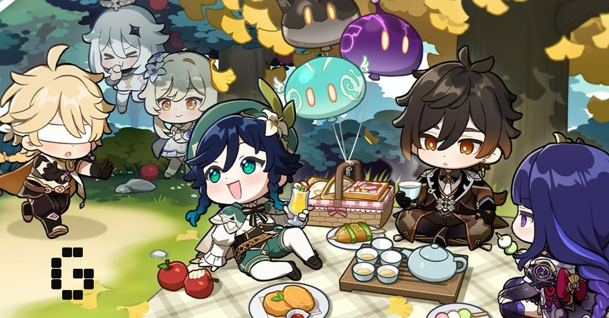

Community management can be fun at times. Being able to interact with players of your game often feels great.
However, like all things it too has its own problems.

〓The GOOD〓
I get to speak to passionate, like-minded people every day. The customers I interact with
on a regular basis, as well as my community mananger peers, feel strongly about the brands that they interact with.
As a community manager I have to be as passionate as my customers to really understand what they say and why.
I’m never alone. Managing online communities is not just a nine to five job and whenever
I’m up early or battling a case of insomnia I know my community is there.
My ability as a community manager is reflected in the success of my communities. A community that performs well is
hailed as a good example of customer service or engagement and improves sentiment towards the brand.
I get to be the first point of contact for the brand I’m representing, so my professional and friendly portrayal
is the key starting point for future brand engagement.
〓The BAD〓
It’s often difficult to find the middle ground between chat and promotion.
Being able to post a good range of content can take time and there’s a risk that I’ll be seen as too spammy.
A community never sleeps. I have to be available 24 hours a day depending on the needs of my community and I’ve
accepted that not everyone has the same sleep patterns as me.
Remaining happy at all times can sometimes be tough. There are always cases where something may rile you on your community,
but you can never ever rise to it. Keeping a calm, professional face at all times can be difficult times, but maintaining
composure is the sign of a good community manager.
Online communities come in many forms. Although the role has only come to public attention in the last few years, it has been
around since message boards and lists first appeared on the Internet. Having said that, I get a lot of satisfaction from seeing
queries through to the end, servicing the needs of both clients and community members and ultimately providing a comfortable place
where brands and consumers can have an open friendly conversation.